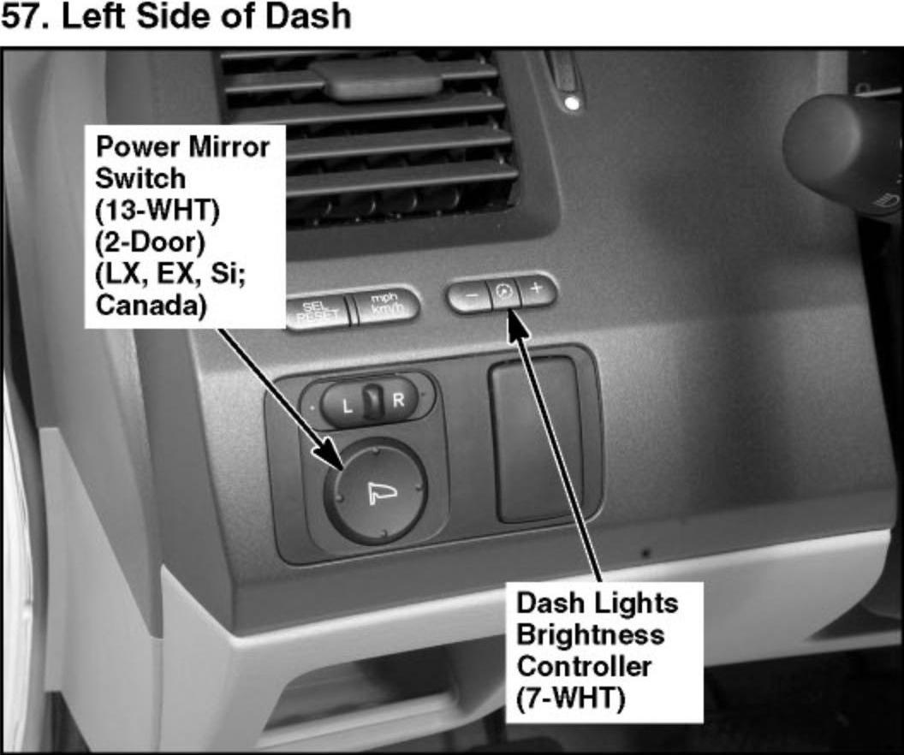
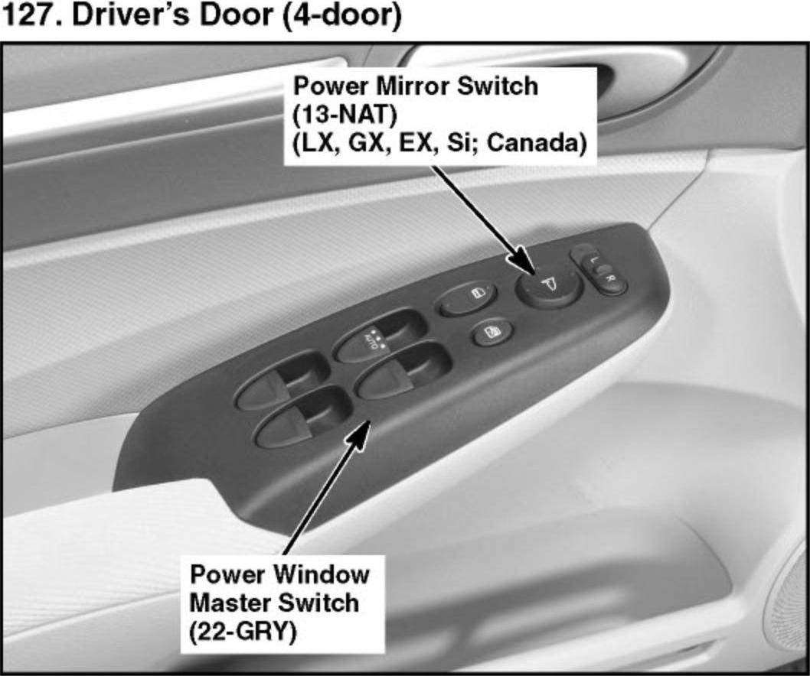

Operation CHARM
: Car repair manuals for everyone.
Home
>>
Honda
>>
2007
>>
Civic Si L4-2.0L
>>
Repair and Diagnosis
>>
Sensors and Switches
>>
Sensors and Switches - Body and Frame
>>
Power Mirror Switch
>>
Locations
Power Mirror Switch: Locations
57. Left Side of Dash:

127. Driver's Door (4-door):

Front Door Component Location Index:
Power Mirrors Component Location Index: